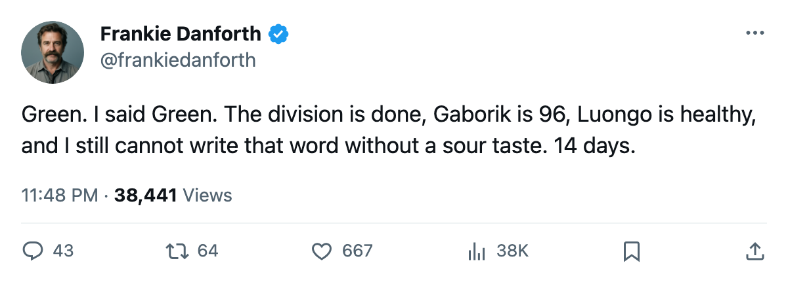

TOR
TORDANFORTH: 24 for, 2 against in 3 games against Buffalo. The 1C slot is still empty.
The Panic Meter reads Green for the first time in weeks. I do not like how that feels.
 Frankie DanforthColumnist · Queen City Telegram
Frankie DanforthColumnist · Queen City Telegram
Code Green

Toronto won 5-1 at Ottawa on Thursday. The shot total reads 25 for, 32 against. Ottawa had 7 more shots than us and scored 1 goal. I told you the shot number is a coin flip. I stand on that.
106 points in the standings. Boston has 78. The Northeast is a formality. The next four games against  Buffalo Sabres are the only division games left on the schedule, and the season series reads 3-0-0, 24 goals for, 2 against. Twenty-four. Two. Three games.
Buffalo Sabres are the only division games left on the schedule, and the season series reads 3-0-0, 24 goals for, 2 against. Twenty-four. Two. Three games.
 Marian Gaborik99 sits at 96 on the Bureau's Book, up six on the Development Index from a base of 91. 45 goals, 36 assists, 81 points, 67 games, 20.1 minutes a night. The man is the best reason the shot total does not matter tonight, because he buries what little you hand him.
Marian Gaborik99 sits at 96 on the Bureau's Book, up six on the Development Index from a base of 91. 45 goals, 36 assists, 81 points, 67 games, 20.1 minutes a night. The man is the best reason the shot total does not matter tonight, because he buries what little you hand him.
The 1C slot
14 days to what the calendar has as the trade deadline.
 Brad Richards87 is playing the 2C slot. He has 61 points in 65 games on a $1.00M contract with 1 year left. He is 24. He is very good at what he does. He is not listed in the 1C slot and his numbers do not look like a 1C's numbers. The 1C slot has
Brad Richards87 is playing the 2C slot. He has 61 points in 65 games on a $1.00M contract with 1 year left. He is 24. He is very good at what he does. He is not listed in the 1C slot and his numbers do not look like a 1C's numbers. The 1C slot has  Mats Sundin92 and nobody else.
Mats Sundin92 and nobody else.
You can win the division with that. You can win 5-1 at Ottawa with that. You can outscore Buffalo 24-2 across three games with that.
You will not survive a playoff series against a club that puts a true 1C in front of you for 25 minutes a night, and every round past the first one has that. 14 days.
The road trip starts Saturday in Buffalo, then  Vancouver Canucks at home, then
Vancouver Canucks at home, then  Edmonton Oilers and
Edmonton Oilers and  Calgary Flames on the road. Toronto is 23-9 away this season, on a 2-game winning streak, with a healthy
Calgary Flames on the road. Toronto is 23-9 away this season, on a 2-game winning streak, with a healthy  Roberto Luongo94 available.
Roberto Luongo94 available.
 Bryan McCabe81 leads all Leaf defensemen with 55 points and he has been sent to the third pair with no power-play minutes. That tells you the coach thinks the blue line has a structure problem on top of the forward one. I would rather have McCabe on the second pair. I would rather have a centre.
Bryan McCabe81 leads all Leaf defensemen with 55 points and he has been sent to the third pair with no power-play minutes. That tells you the coach thinks the blue line has a structure problem on top of the forward one. I would rather have McCabe on the second pair. I would rather have a centre.
Panic Meter: Code Green. I have never wanted to throw my program at a Green so much in my life.
